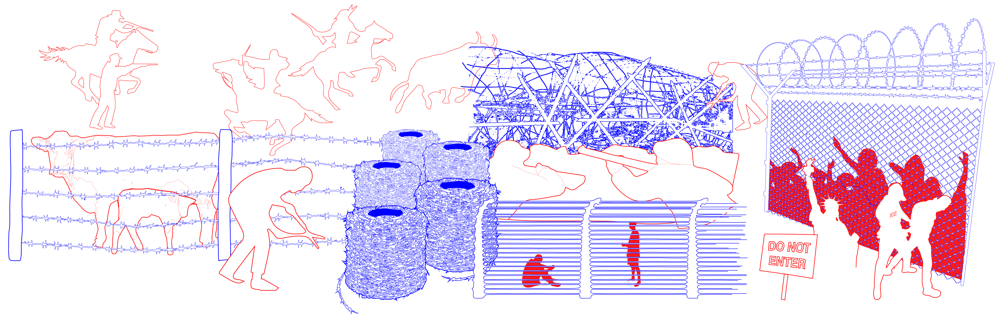

''American Dream''


Since its creation in the 1860s barbed wire has been used as a tool of division and control. First used by farmers in the American West, barbed wire was a perfect material for division, keeping out Native Americans whose land was being stolen while also preventing cattle from leaving the enclosed space.
Currently, barbed wire can be seen on US border walls that seek to impede the entrance of migrants. Migrants and asylum seekers, many of which are children, are dehumanized by politicians who portray them as a threat. Those in detention centers are subjected to harsh mistreatment which only worsened during the pandemic as overcrowding and a lack of medical resources created hotspots for the virus. Many migrants in the US live in fear of being taken from their families and undergo a loss of freedom and culture in order to assimilate so they can go unnoticed. Recently, threats of ICE raids have created metaphorical fences as many migrants have chosen to lock themselves in at home pretending as if they are not there so that they can avoid being confronted.
The goal of the "American Dream" mask is to show how the immigrant experience in America is far from the American Dream that many of the people coming to America seek. The American Dream’s message of opportunity and welcoming is represented by visual references to the Statue of Liberty. The corruption of these ideals is shown through the use of barbed wire which represents a history of mistreatment, scare tactics against migrants, and an obsession with borders and division. The mask also resembles a crown of thorns which represents the hardships and loss of freedom migrants go through in pursuit of the American Dream.